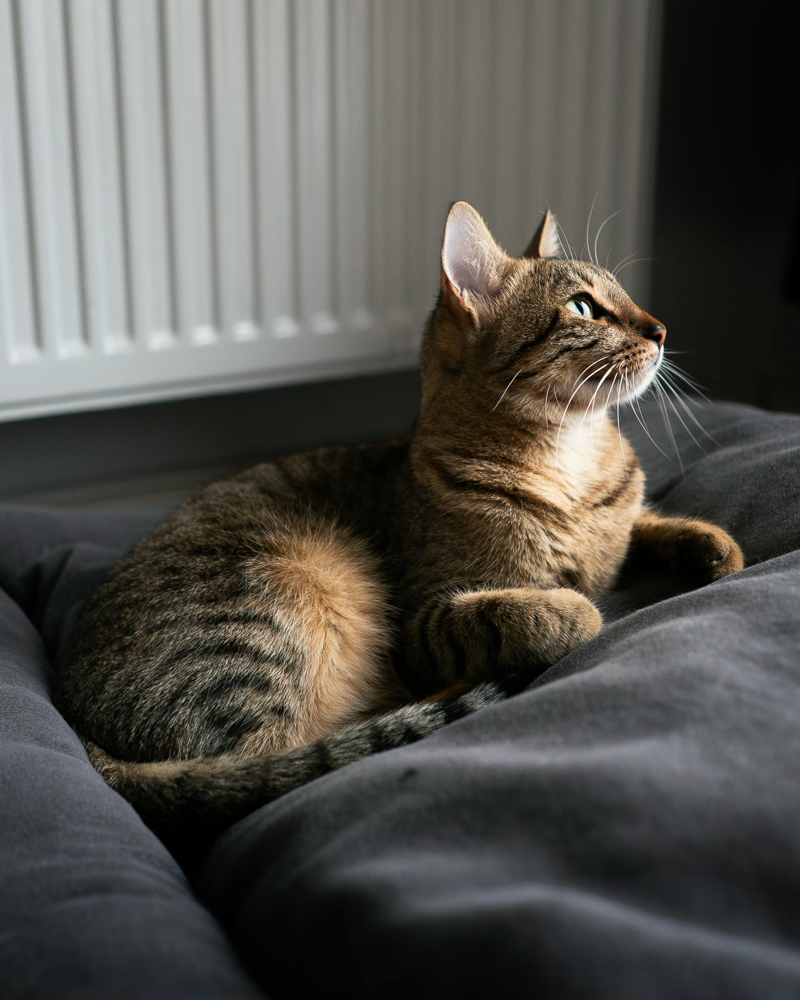
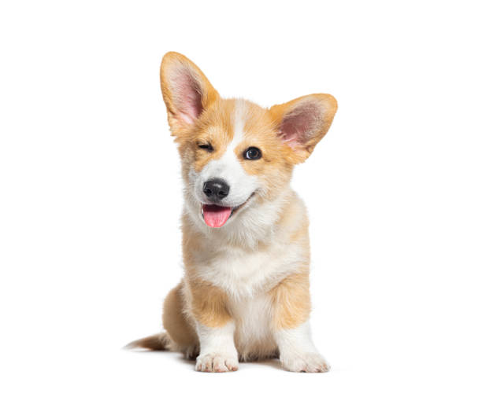
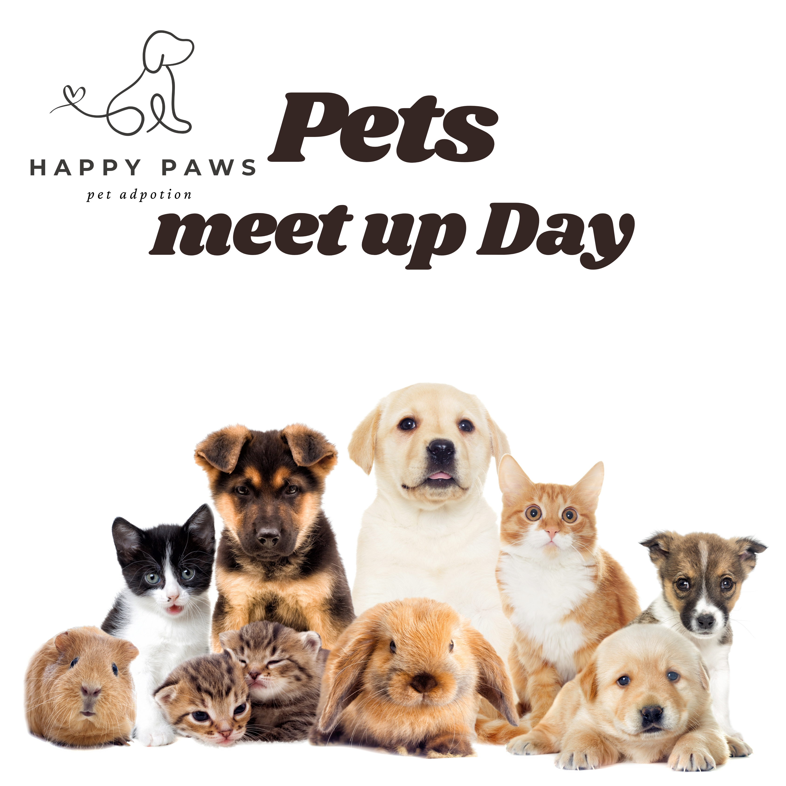

We rescue homeless cats and dogs and help them find safe and loving forever homes.
View Available PetsTaking another animal into your home is a caring decision that provides homeless and abandoned animals with a second chance at life. Rescued pets are frequently from challenging circumstances and require love, care and a safe home to feel protected and valued. In exchange, adopted pets offer the companionship, joy, and love without condition of their owner. Pet Adoption also helps to decrease stray animals and also supports shelters and animal welfare protection agencies. People who adopt pets save their lives, but they have a friend and form a bond of trust and companionship that can last a lifetime.

We rescue abandoned and homeless animals from difficult situations.

All pets receive food, medical attention, and emotional support.

We connect loving families with pets looking for a forever home.
See how adoption changes lives – for pets and families alike.

10am – 2pm · Meet our adoptable pets-At the event, you will have a chance to meet your desired animal and interact with a variety of animals that are all friendly.On the event, you will get a chance to meet your desired animal and interact with various friendly animals to find the one that's best suited for your lifestyle and personality. If you're hoping for a dog that is full of energy, a cat that is quiet, or another type of pet, you'll have an opportunity to watch their behavior, ask questions of volunteers, and find out what they need. The idea is to enable you to make a well-informed decision, making it possible to create a solid, loving relationship with your future pet..

11am – 4pm · On‑Guests will have the opportunity to meet different animals and interact with the friendly volunteers, and gain information about the adoption process in a friendly atmosphere. Families learn about each animal's personality and needs, and how they can care for them, so they can choose the right animal for their families, through the help of the volunteers. The event is also a chance to become familiar with fostering where people can take temporary responsibility for animals, give them love and care until they are adopted..

2pm – 3pm · Vitural –Veterinary clinic events are programs that are targeted to the community, which provides pet owners with health checks, vaccinations, and general information on their pets' health in a single location. During the event, veterinarians and volunteers can offer low-cost or free consultation and advice on any health problems and how to care for and feed pets as well as grooming. It's also a wonderful chance for individuals to pose questions, understand responsible pet ownership, and keep their pets healthy and current with necessary treatments..